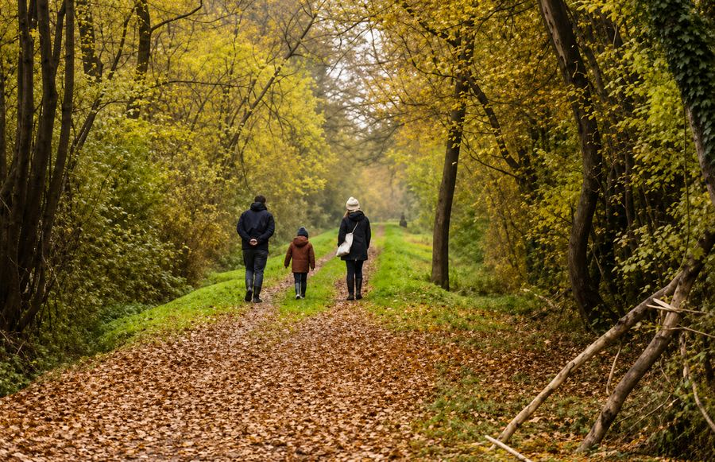
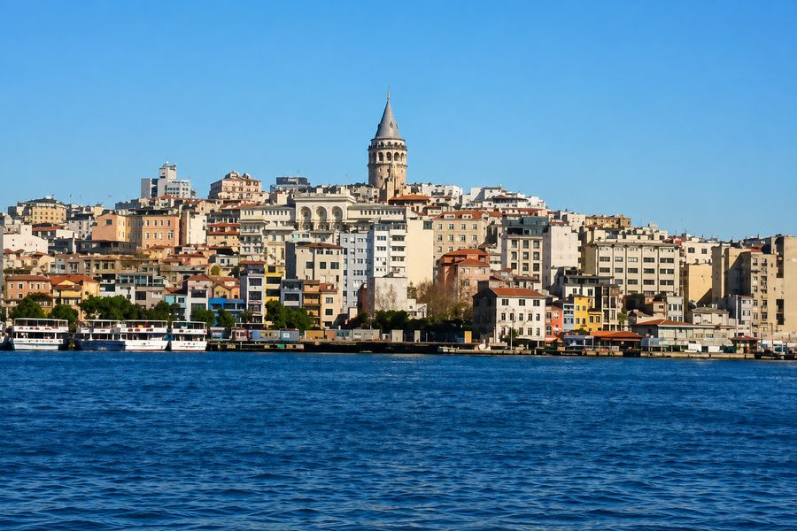
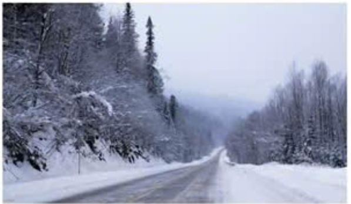
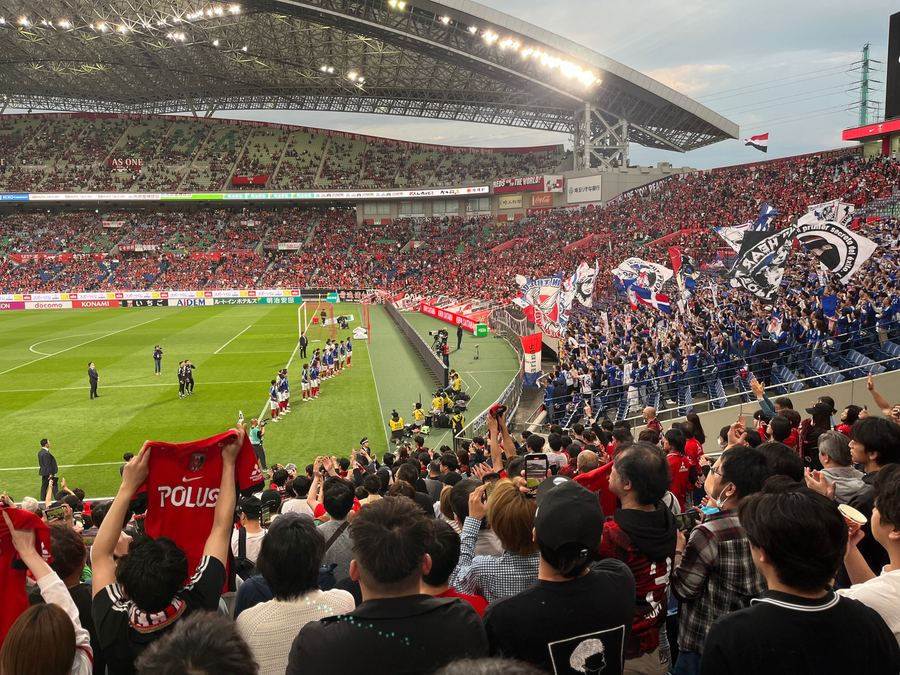

Aptis Speaking
Part 1: In this part, I am going to ask you three short questions about yourself and your interests. You will have 30 seconds to reply to each question.
1. Which sports do people like in your country?
=> People in my country like football. It is fun and useful. It helps people relax after work and improve their health. Besides, they like playing badminton. It is easy and enjoyable. We often play football every weekend with our neighbors. It also teaches us teamwork and makes us feel more energetic. Badminton is popular too because anyone can learn it quickly.
2. What is the food like in Vietnam?
=> In Vietnam, there are many kinds of food. It is delicious, healthy and cheap. Vietnam is famous for Pho, a kind of noodles that people often eat for breakfast. I usually eat pho with fresh herbs and a little chili for extra flavor. My family also enjoys cooking it together at home. Vietnamese food always makes me feel proud of my culture.
3. Tell me the last time / a time you went to the movies?
=> Last week I went to the movies with my friends. We watched a cartoon, Tom and Jerry. It was about a cat and a mouse. It was very funny. We bought some popcorn and drinks before the movie started. My friends and I laughed a lot during the film. It was a really relaxing evening.
Part 2: In this part, I'm going to ask you to describe a picture. Then I will ask you two questions about it. You will have 45 seconds for each response.
 |
1. Describe the picture => In this picture, I can see three people in a forest. I think they are a family. They are wearing warm clothes so I think the weather is cold. There are many trees around them. The weather looks nice. I really like this picture because I love nature |
2. What outdoor activities do you like to do with your family or friends?
=> I like doing exercise with my family in the park near my house. It is enjoyable and good for our health. Here we can play sports and enjoy fresh air. Also, I love swimming in the lake with my friends. It is really fun. Sometimes we bring a ball and play together as a family. Swimming also helps me feel more relaxed after a long week. I always look forward to these weekend activities.
3. Why do you think spending time in nature is good for people's health?
=> I think spending time in nature is good for people’s health because people can enjoy fresh air and relax after a busy day. Besides, they can reduce screen time and enjoy the beauty of nature . For example, walking among trees always makes me feel calmer and happier. It also gives me more energy to start a new day.
Part 3: In this part, I'm going to ask you to compare two pictures, and I will then ask you two questions about them. You will have 45 seconds for each response.
Tell me what you can see in these two pictures.


=> The two pictures show different places
In the first picture, I can see a big city by the sea. There are many buildings they are beautiful and modern. The weather is very nice.
And the second picture, I can see a mountainous area. Along the road, there are many trees. The weather in this picture is very cold because I can see a lot of snow on the ground. The city looks lively and full of energy, while the mountain area feels peaceful and quiet. These two pictures show very different lifestyles.
2. Which of these two places would you prefer to visit for a holiday?
=> Both places have different attractions depending on people’s interests. Some people like visiting a mountainous area because they love exploring the nature.
For me, I prefer to visit the city by the sea because it is more beautiful and modern. Also, the weather is warm and sunny. It is perfect for outdoor activity. I also enjoy walking along the beach in the evening. It helps me feel relaxed and forget about stress.
3. How can extreme weather conditions affect people's travel plans?
=> Extreme weather can delay flights and make roads unsafe. Sometimes people have to change or cancel their trips. For example, heavy rain or storms can cause long delays at airports. This can be stressful for travelers with important plans.
Part 4: In this part, I'm going to show you a picture and ask you three questions. You will have one minute to think about your answers before you start speaking. You will have two minutes to answer all three questions.

Tell me about a time when you attended a memorable sports event.
Why do you think some sports events attract millions of viewers worldwide?
Do you agree that hosting international sports events is beneficial for a country?
=> Regarding the first question, today I'm going to talk about a memorable sports event. Last year, I watched a football match at the stadium with my friends. The atmosphere was exciting, and our team won the game. The stadium was full of noise and excitement. I still remember that day with a smile.
Turning to the second question, I think some sports events attract millions of viewers because they are exciting and bring people together. Many famous athletes also take part in them. People also enjoy the competition and want to support their favorite teams.
About the last question, I agree that hosting international sports events is beneficial for a country. It attracts tourists, improves the country's image and helps the economy grow. It also creates new jobs and encourages the country to improve its facilities.